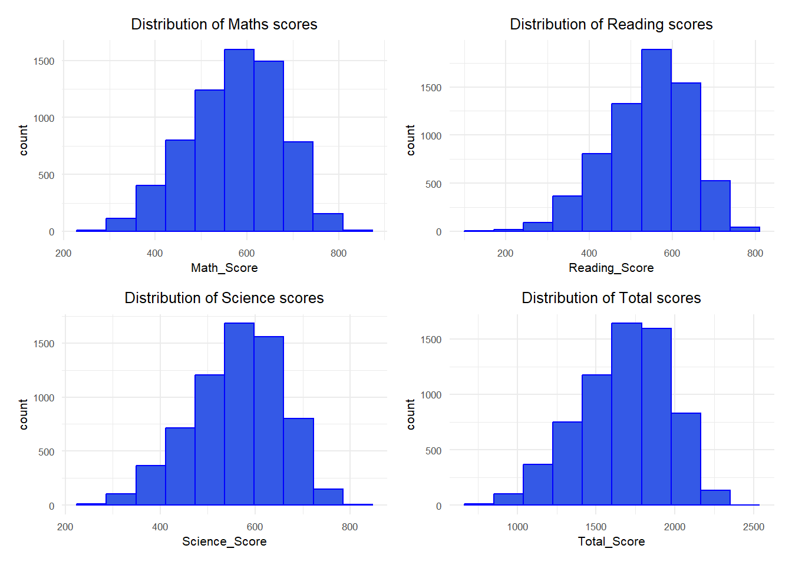
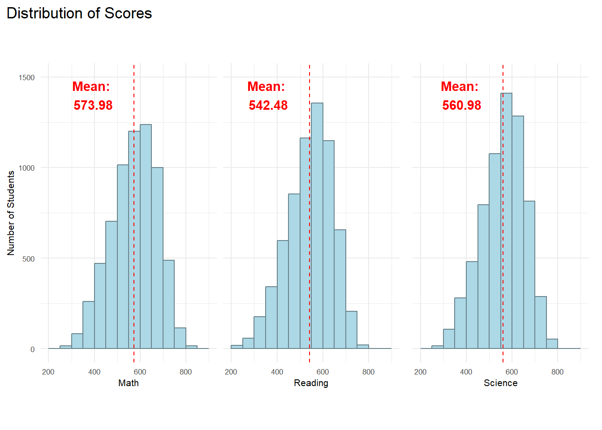
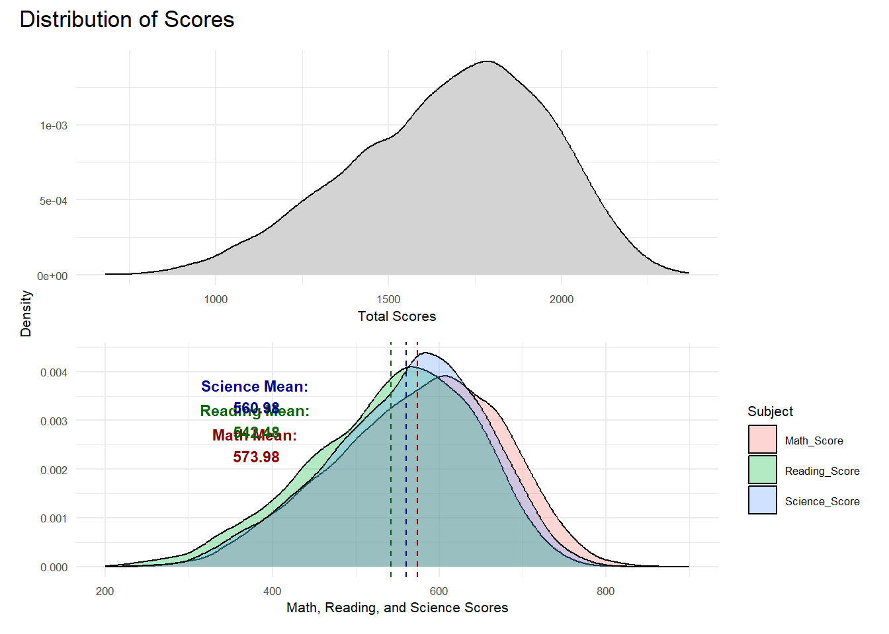
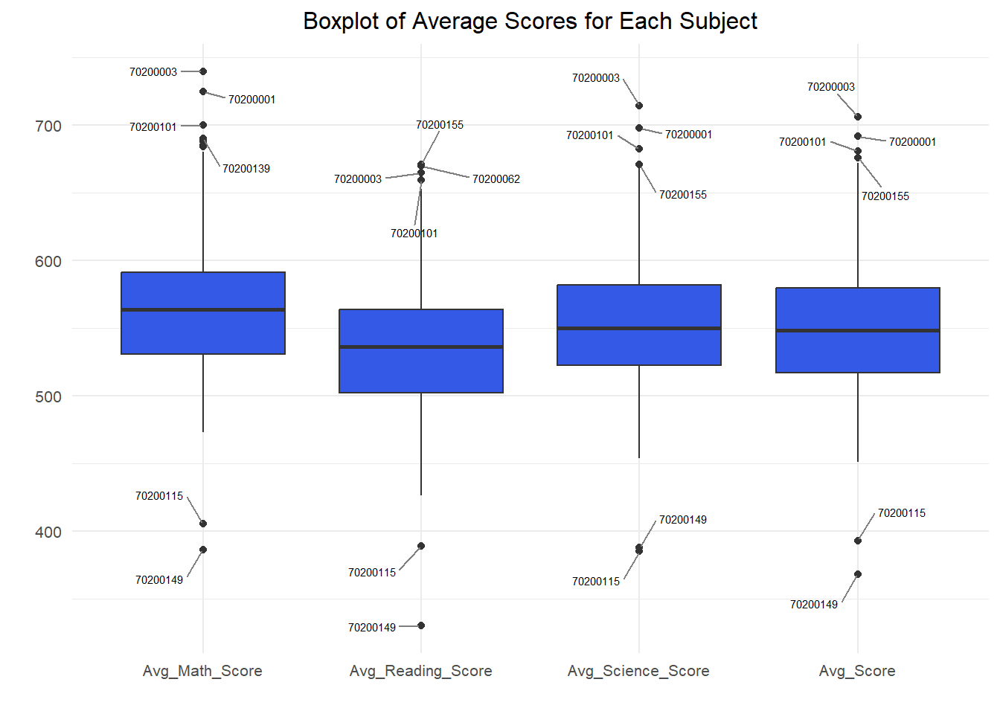

Show the code
pacman::p_load(tidyverse,
haven,
dplyr,
plotly,
ggrepel,
patchwork,
ggthemes,
hrbrthemes)This exercise aims to critique and improved on the visualizations created by peers from Take Home Exercise 1 based on clarity and aesthetics. For each visualization, I will be listing what had worked well, what did not, and what I think would help make it better. Finally, the visualization will be re-made based on my suggestions.
First, let us prepare the required data.
We begin by loading the required R packages.
pacman::p_load(tidyverse,
haven,
dplyr,
plotly,
ggrepel,
patchwork,
ggthemes,
hrbrthemes)Similar to exercise 1, the data we are using can be found from the PISA 2022 Database. The database contains full set of responses from individual students, principals, and parents. In this task, we will only be looking at the students questionnaire data file. In particular, we are only interested in the data of students from Singapore.
stu_qqq_SG <- read_rds("data/stu_qqq_SG.rds")We will be using a curated set of variables for our analysis. The variables and their descriptions are listed in the table below.
| Variable | Description | Data Type |
|---|---|---|
| CNTSCHID | The unique School’s ID | Categorical |
| CNTSTUID | The unique student’s ID | Categorical |
| Math_Score | Average PV scores for Math | Numerical |
| Reading_Score | Average PV scores for Reading | Numerical |
| Science_Score | Average PV scores for Science | Numerical |
| Total_Score | Overall average score from the sum of Math, Reading, and Science | Numerical |
| Gender | Male or Female | Numerical |
| Own_Room | Whether student has his or her own room | Categorical |
| mi-num | Number of musical instruments at student’s home | Numerical |
The following code extracts and integrates them in a new data frame.
# Create a new dataset PV by extracting relevant variables from stu_qqq_SG
PV <- stu_qqq_SG %>%
mutate(
Math_Score = rowMeans(select(., contains("PV")&contains("MATH")), na.rm = TRUE),
Reading_Score = rowMeans(select(., contains("PV")&contains("READ")), na.rm = TRUE),
Science_Score = rowMeans(select(., contains("PV")&contains("SCIE")), na.rm = TRUE),
Total_Score = Math_Score + Reading_Score + Science_Score,
Gender = ifelse(ST004D01T == 1, "Female", "Male"),
Own_Room = ifelse(ST250Q01JA == 1, "Yes" , "No"),
mi_num = ST251Q06JA
) %>%
select(CNTSCHID, CNTSTUID, Math_Score, Reading_Score, Science_Score, Total_Score, Gender, Own_Room, mi_num)Another data set is created for schools. The following code calculates the maths, reading, and science, as well as the average grades in these three subjects for each school’s students.
School_Avg_Scores <- PV %>%
group_by(CNTSCHID) %>%
summarize(
Avg_Math_Score = mean(Math_Score, na.rm = TRUE),
Avg_Reading_Score = mean(Reading_Score, na.rm = TRUE),
Avg_Science_Score = mean(Science_Score, na.rm = TRUE),
Avg_Score = mean(Total_Score/3, na.rm = TRUE)
)
School_Avg_Scores_long <- School_Avg_Scores %>%
select(CNTSCHID,
starts_with("Avg_Math"),
starts_with("Avg_Reading"),
starts_with("Avg_Science"),
starts_with("Avg_Score")) %>%
pivot_longer(cols = -CNTSCHID,
names_to = "Subject",
values_to = "Score")The exercise I have chosen for the make-over can be found here. In total, there are 5 visualizations.
The following code plots histograms of maths, reading, science, and total score scores to observe the distribution of student performance:
plot1 <- ggplot(data = PV, aes(x = Math_Score)) +
geom_histogram(bins = 10, boundary = 100, color = "blue", fill = "#3459e6") +
ggtitle("Distribution of Maths scores")+
theme_minimal() +
theme(text = element_text(size = 8),
plot.title = element_text(hjust = 0.5))
plot2 <- ggplot(data = PV, aes(x = Reading_Score)) +
geom_histogram(bins = 10, boundary = 100, color = "blue", fill = "#3459e6") +
ggtitle("Distribution of Reading scores")+
theme_minimal() +
theme(text = element_text(size = 8),
plot.title = element_text(hjust = 0.5))
plot3 <- ggplot(data = PV, aes(x = Science_Score)) +
geom_histogram(bins = 10, boundary = 100, color = "blue", fill = "#3459e6") +
ggtitle("Distribution of Science scores")+
theme_minimal() +
theme(text = element_text(size = 8),
plot.title = element_text(hjust = 0.5))
plot4 <- ggplot(data = PV, aes(x = Total_Score)) +
geom_histogram(bins = 10, boundary = 100, color = "blue", fill = "#3459e6") +
ggtitle("Distribution of Total scores")+
theme_minimal() +
theme(text = element_text(size = 8),
plot.title = element_text(hjust = 0.5))
plot1 + plot2 + plot3 + plot4
The following code generates density plots to compare the distribution of academic performance between students of different genders, providing a comprehensive understanding of the gender differences in academic achievement.
plot1 <- ggplot(data = PV, aes(x = Math_Score, fill = Gender)) +
geom_density(alpha = 0.7, position = "identity", stat = "density") +
scale_fill_manual(values = c("Female" = "#FF5733", "Male" = "#3459e6")) +
labs(title = "Math Scores by Gender") +
theme(legend.position = "none") +
scale_y_continuous(labels = scales::percent) +
theme_minimal() +
theme(text = element_text(size = 8), plot.title = element_text(hjust = 0.5))
plot2 <- ggplot(data = PV, aes(x = Reading_Score, fill = Gender)) +
geom_density(alpha = 0.7, position = "identity", stat = "Density") +
scale_fill_manual(values = c("Female" = "#FF5733", "Male" = "#3459e6")) +
labs(title = "Reading Scores by Gender") +
theme(legend.position = "none") +
scale_y_continuous(labels = scales::percent)+
theme_minimal() +
theme(text = element_text(size = 8),
plot.title = element_text(hjust = 0.5))
plot3 <- ggplot(data = PV, aes(x = Science_Score, fill = Gender)) +
geom_density(alpha = 0.7, position = "identity", stat = "Density") +
scale_fill_manual(values = c("Female" = "#FF5733", "Male" = "#3459e6")) +
labs(title = "Science Scores by Gender") +
theme(legend.position = "none") +
scale_y_continuous(labels = scales::percent)+
theme_minimal() +
theme(text = element_text(size = 8),
plot.title = element_text(hjust = 0.5))
plot4 <- ggplot(data = PV, aes(x = Total_Score, fill = Gender)) +
geom_density(alpha = 0.7, position = "identity", stat = "density") +
scale_fill_manual(values = c("Female" = "#FF5733", "Male" = "#3459e6")) +
labs(title = "Total Scores by Gender") +
scale_y_continuous(labels = scales::percent)+
theme_minimal() +
theme(text = element_text(size = 8),
plot.title = element_text(hjust = 0.5))
combined_plots <- plot1 + plot2 + plot3 + plot4 +
plot_layout(guides = "collect")
combined_plots
The following code draws box plots showing the distribution of school average scores in each subject, with text labels identifying the four highest-scoring schools and the two lowest-scoring schools in each subject.
outliers_data <- School_Avg_Scores %>%
pivot_longer(cols = starts_with("Avg_"), names_to = "Subject", values_to = "Score") %>%
group_by(Subject) %>%
arrange(Score) %>%
slice(c(1:2, (n() - 3):(n())))
ggplot(School_Avg_Scores_long, aes(x = Subject, y = Score, fill = Subject)) +
geom_boxplot(fill = "#3459e6") +
geom_text_repel(data = outliers_data, aes(label = CNTSCHID),
position = position_dodge(width = 1),
box.padding = 0.8,
force = 1,
segment.color = "grey50",
size = 2) + # Use ggrepel's geom_text_repel
labs(title = "Boxplot of Average Scores for Each Subject", x = "", y = "") +
theme_minimal() +
theme(text = element_text(size = 10),
plot.title = element_text(hjust = 0.5))
The following code shows scatter plots of students’ maths, reading, science and overall performance against the number of musical instruments owned, as well as showing the relationship by fitting a line through linear regression.
plot_math <- ggplot(data=PV, aes(x=mi_num, y=Math_Score)) +
geom_point(color="#3459e6") +
geom_smooth(method=lm, size=0.5,color = "#FF5733") +
labs(title ="Math Score by Musical instruments", x = "", y = "")+
theme_minimal() +
theme(text = element_text(size = 8),
plot.title = element_text(hjust = 0.5))
plot_reading <- ggplot(data=PV, aes(x=mi_num, y=Reading_Score)) +
geom_point(color="#3459e6") +
geom_smooth(method=lm, size=0.5,color = "#FF5733") +
labs(title ="Reading Score by Musical instruments", x = "", y = "")+
theme_minimal() +
theme(text = element_text(size = 8),
plot.title = element_text(hjust = 0.5))
plot_science <- ggplot(data=PV, aes(x=mi_num, y=Science_Score)) +
geom_point(color="#3459e6") +
geom_smooth(method=lm, size=0.5,color = "#FF5733") +
labs(title ="Science Score by Musical instruments", x = "", y = "")+
theme_minimal() +
theme(text = element_text(size = 8),
plot.title = element_text(hjust = 0.5))
plot_total <- ggplot(data=PV, aes(x=mi_num, y=Total_Score)) +
geom_point(color="#3459e6") +
geom_smooth(method=lm, size=0.5,color = "#FF5733") +
labs(title ="Total Score by Musical instruments", x = "", y = "")+
theme_minimal() +
theme(text = element_text(size = 8),
plot.title = element_text(hjust = 0.5))
combined_plot <- plot_math + plot_reading + plot_science + plot_total
combined_plot
The following code plots box-and-line graphs to compare student performance in maths, reading, science and overall scores by whether or not they had the room to themselves.
p1 <- ggplot(data = PV, aes(x =Math_Score , y = Own_Room)) +
geom_boxplot(fill = "#3459e6") +
labs(title ="Math Score by Private Space",x = "", y = "")+
theme_minimal() +
theme(text = element_text(size = 8),
plot.title = element_text(hjust = 0.5))
p2 <- ggplot(data = PV, aes(x =Reading_Score , y = Own_Room)) +
geom_boxplot( fill = "#3459e6") +
labs(title ="Reading Score by Private Space", x = "", y = "")+
theme_minimal() +
theme(text = element_text(size = 8),
plot.title = element_text(hjust = 0.5))
p3 <- ggplot(data = PV, aes(x = Science_Score , y = Own_Room)) +
geom_boxplot( fill = "#3459e6") +
labs(title ="Science Score by Private Space", x = "", y = "")+
theme_minimal() +
theme(text = element_text(size = 8),
plot.title = element_text(hjust = 0.5))
p4 <- ggplot(data = PV, aes(x = Total_Score , y = Own_Room)) +
geom_boxplot( fill = "#3459e6") +
labs(title ="Total Score by Private Space", x = "", y = "")+
theme_minimal() +
theme(text = element_text(size = 8),
plot.title = element_text(hjust = 0.5))
combined_plot<- p1 + p2 + p3 + p4
combined_plot